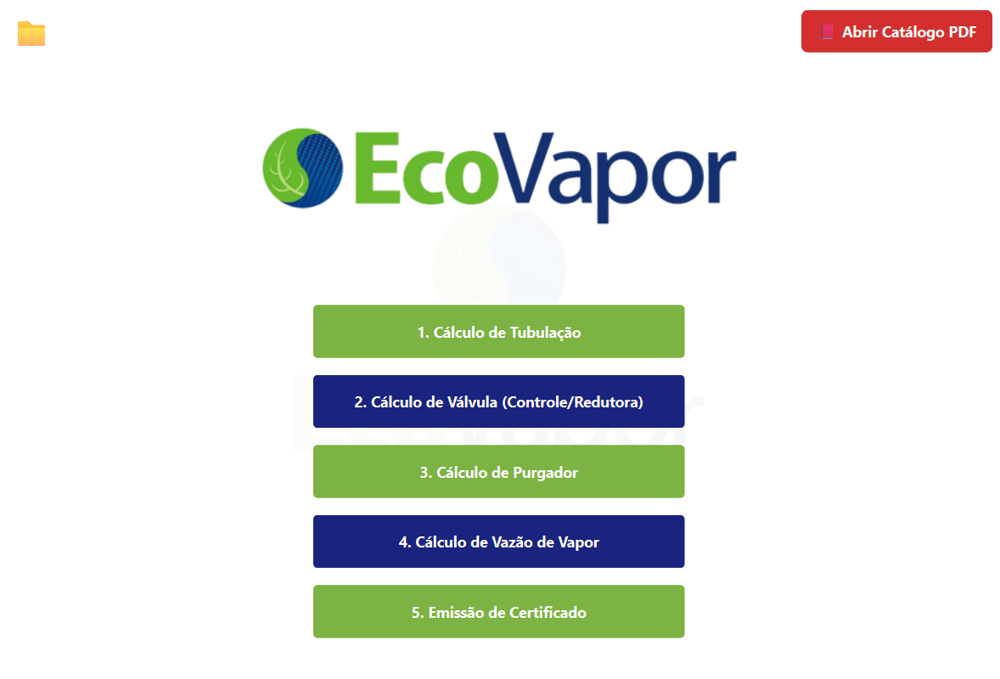
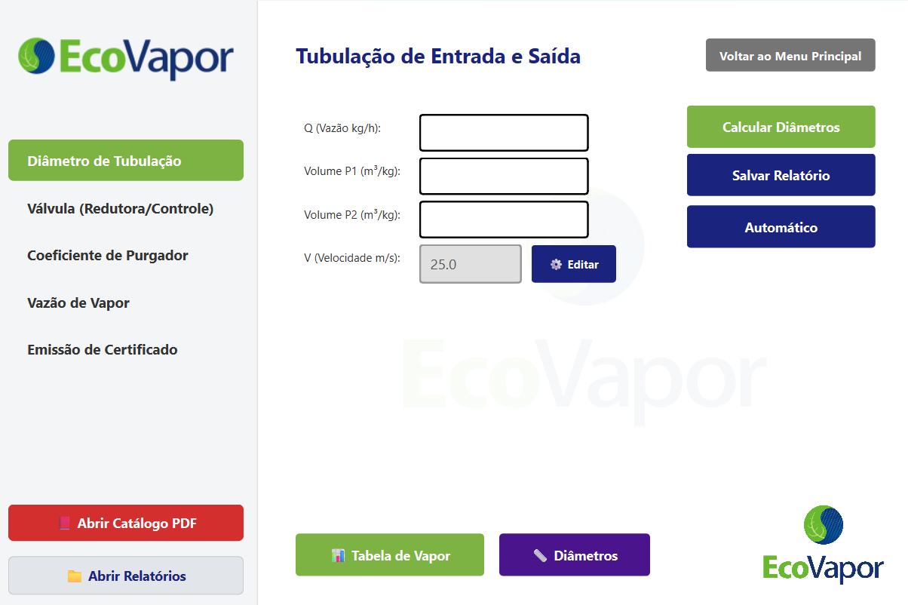
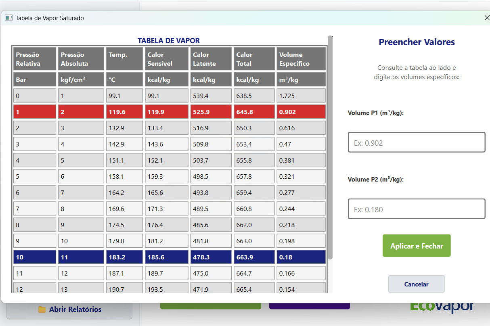
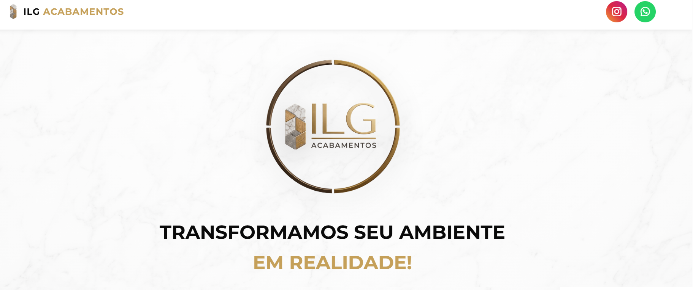
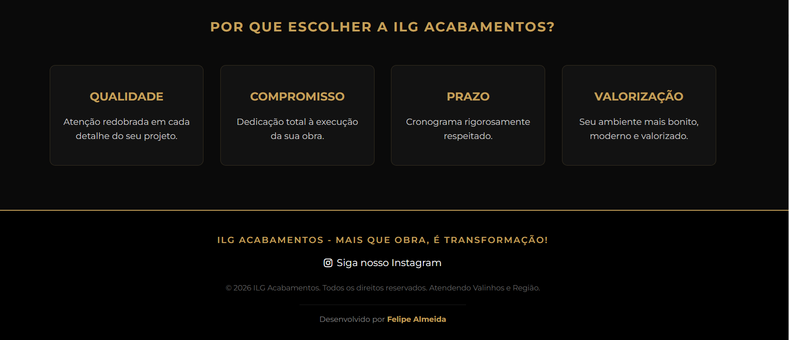
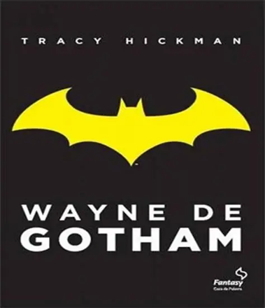

Desenvolvedor com experiência em automação, gestão de dados e arquitetura de sistemas. Atuando com ferramentas sólidas de mercado no back-end e front-end para criar soluções eficientes e impactantes.
Visualizar ProjetosDesenvolvimento independente de software para automatizar a emissão de certificados de calibração industrial e cálculo de KV. O sistema realiza injeção dinâmica de dados, laudos e imagens redimensionadas gerando arquivos em DOCX e PDF.

Menu
Calculadora
TabelaDesenvolvimento de landing page institucional para a empresa ILG Acabamentos. O projeto foca em apresentar a marca, destacar os diferenciais (qualidade, compromisso, prazo) e captar clientes através de uma interface clara e direta.
Acessar Site
Início
Sistema abrangente desenvolvido como projeto de extensão da UTFPR para o gerenciamento de voluntários, oficinas e termos de adesão. Foco na otimização da eficiência das operações e na experiência dos participantes.
Aplicação orientada a objetos construída para gerenciar registros complexos envolvendo fornecedores, clientes e relógios. Estruturação focada em manipulação segura de dados.
Membro do ArtBot focado em projetar, desenvolver e programar robôs. O projeto atende tanto necessidades para eventos competitivos quanto para exposições públicas educacionais.
Visualizar CertificadoUniversidade Tecnológica Federal do Paraná (UTFPR)
Serviço Nacional de Aprendizagem Industrial (SENAI)
Capacidade de leitura e compreensão de documentações técnicas de software.
